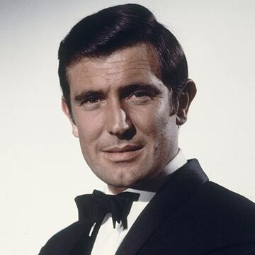

George Lazenby
Audience Rating:
Opinion Rating:
On Her Majesty's Secret Service (1969)

Plot
Agent 007 and the adventurous Tracy Di Vicenzo join forces to battle the evil SPECTRE organization in the treacherous Swiss Alps. But the group's powerful leader, Ernst Stavro Blofeld, is launching his most calamitous scheme yet: a germ warfare plot that could kill millions!
Rating
Rotten Tomotatoes
IMDb
Opinion
Decently Good
After many James Bond films came out after this one, this film lost its popularity and George Lazenby became the least rated James Bond. Personally, this film is actually really good, however the plot can be a little slow at times. The place it took place in, Switzerland, is amazing and the fact that this is the only movie where James Bond gets married and has a love interest is extremely unique. This film did not deserve the hate to be honest and if Lazenby had more films, it would be fair to judge his rating.